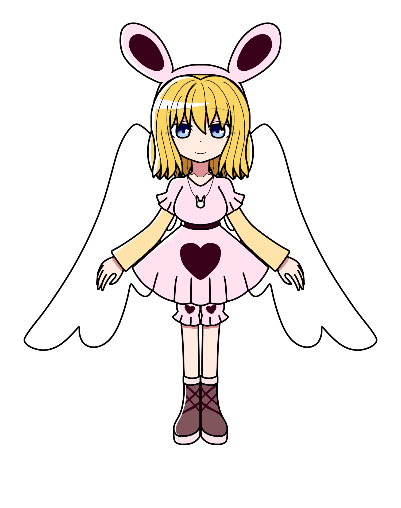

ラビリンス
概要
城にいる賢者の一人。
長い時を生きており、マリアやエンデを除くと
現在生存している生物の中で最も長く生きている。
プロフィール
| 種族 | 不明 |
|---|---|
| 性別 | 女性 |
| 年齢 | 4900歳 |
| 誕生日 | 忘れた |
| 身長 | 187cm |
| 血液型 | |
| 出身 | |
| イメージカラー | |
| イメージCV |
人物像
外見
うさ耳のカチューシャを付けている。
薄ピンク色のワンピースを着用。
性格
飄々としている。